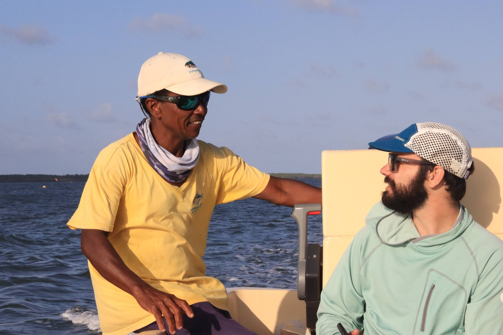
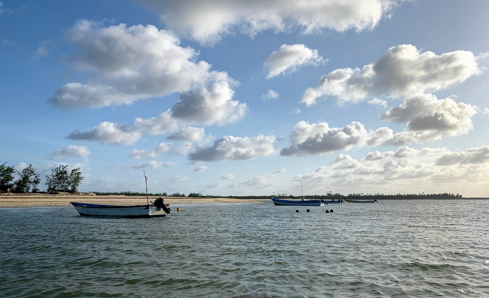
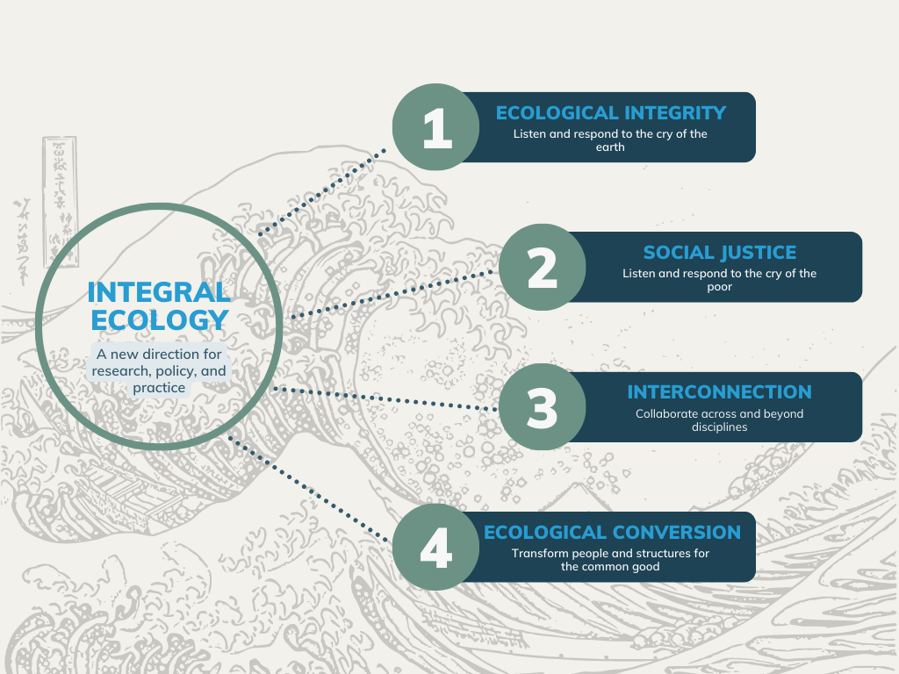

My Research
Broadly speaking, my research focuses on coastal fisheries and their management.
Nutrient yields from coral reefs
Narragansett Bay
Ecological justice in ocean governance
My research works to put integral ecology into practice in coastal and marine systems. My interests are quite broad, and I am always on the lookout for complex problems that could benefit from the tools of fisheries science. These are the projects I’m currently working on.

Nutrition-sensitive fisheries management
Marine capture fisheries are an important source of food, nutrition, and income around the world, but they face many challenges and their contributions to food security are often neglected in policy and management. This project uses catch and nutrition data to ask questions about social and ecological trade-offs in fishery management. Can we sustainably increase the quantity and quality of food produced by small-scale fisheries in developing countries? Can we preserve coral reef ecological function without compromising food security? The first publication from this project shows that managing Kenyan trap fisheries to target fish with larger, more sustainable body sizes is associated with improved nutrient yields (Galligan et al., 2022).
Human rights in ocean governance
Current models of ocean governance often marginalize small-scale actors and fail to deliver on international human rights obligations. In this project, I advance criticisms that highlight the negative social and environmental impacts of these harmful governance models and advocate for more just alternatives, such as human rights-based and nutrition-sensitive approaches. In this context, I work to occupy a space of radical critique while still offering feasible solutions. The outcomes of this project include publications on extractivism in UNCLOS (Galligan, 2021) and blue justice in Kenya (Galligan & Kinney, 2021).

Integral ecology
As a Jesuit in formation to be a Catholic priest, I am deeply inspired by the thought of Pope Francis, who writes:
“We are faced not with two separate crises, one environmental and the other social, but rather with one complex crisis which is both social and environmental. Strategies for a solution demand an integrated approach to combating poverty, restoring dignity to the excluded, and at the same time protecting nature.”
Francis believes that these integrated, solution-oriented strategies should take on the contours of what he calls “integral ecology.” This project, which I am working on in collaboration with the Laudato Si’ Research Institute, is about figuring out what integral ecology means for research, policy, and practice. How does an integral ecology paradigm invite new approaches to knowledge production? Are these methods different for academics from different disciplines? And how can natural scientists develop new approaches to environmental problems without sacrificing disciplinary integrity or rigor?
